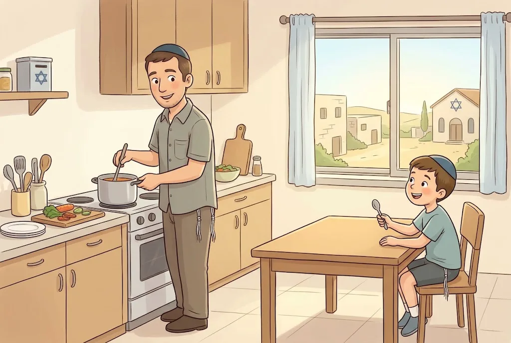

🥚הַסְּעוּדָה הַמַּפְסֶקֶת
הַסְּעוּדָה הָאַחֲרוֹנָה לִפְנֵי הַצּוֹם, אַחֲרֵי חֲצוֹת הַיּוֹם, נִקְרֵאת "סְעוּדָה מַפְסֶקֶת". אוֹכְלִים בָּהּ תַּבְשִׁיל אֶחָד בִּלְבַד, וְלֹא אוֹכְלִים בָּשָׂר וְלֹא שׁוֹתִים יַיִן. רַבִּים אוֹכְלִים בָּהּ בֵּיצָה קָשָׁה – מַאֲכַל אֲבֵלִים, כִּי הִיא עֲגֻלָּה כְּמוֹ גַּלְגַּל הַחוֹזֵר בָּעוֹלָם.
יוֹשְׁבִים עַל הַקַּרְקַע (בְּלִי לְהָסִיר נַעֲלַיִם), וְכָל אֶחָד יוֹשֵׁב לְבַד בְּפִנָּתוֹ – וְלָכֵן אֵין מְזַמְּנִים. בַּצָּהֳרַיִם אוֹכְלִים סְעוּדָה רְגִילָה, כְּדֵי שֶׁיִּהְיֶה כֹּחַ לַצּוֹם.
💛 אַהֲבַת הַשֵּׁם: רַבִּי יְהוּדָה בְּרַבִּי אִלְעַאי אָכַל בַּסְּעוּדָה הַזֹּאת פַּת יְבֵשָׁה בְּמֶלַח, כְּמִי שֶׁמֵּתוֹ מֻטָּל לְפָנָיו. כָּל כָּךְ הִרְגִּישׁוּ חֲכָמֵינוּ אֶת הַחֻרְבָּן – וְגַם אָנוּ לוֹמְדִים לְהַרְגִּישׁ.
🍲שְׁנֵי תַּבְשִׁילִים
בַּסְּעוּדָה הַמַּפְסֶקֶת אוֹכְלִים רַק תַּבְשִׁיל אֶחָד. גֶּזֶר וְתַפּוּחֵי אֲדָמָה שֶׁבֻּשְּׁלוּ יַחַד – הֵם שְׁנֵי תַּבְשִׁילִים. גַּם בֵּיצָה קָשָׁה וּבֵיצָה רַכָּה – שְׁנֵי תַּבְשִׁילִים. אֲבָל אֹרֶז עִם מְעַט בָּצָל, שֶׁהַבָּצָל רַק מוֹסִיף טַעַם – תַּבְשִׁיל אֶחָד. וְאֵין אִסּוּר לֶאֱכֹל שְׁתֵּי בֵּיצִים.
הַסְּעוּדָה הַמַּפְסֶקֶת הִיא הָאַחֲרוֹנָה לִפְנֵי הַצּוֹם, אַחֲרֵי חֲצוֹת. מִי שֶׁאוֹכֵל אֶת סְעוּדָתוֹ הָאַחֲרוֹנָה לִפְנֵי חֲצוֹת – רַשַּׁאי לֶאֱכֹל בָּהּ כַּמָּה תַּבְשִׁילִים. וְלֹא יַעֲרִים לֶאֱכֹל סְעוּדָה גְּדוֹלָה סָמוּךְ לַצּוֹם, וּמִיָּד אַחֲרֶיהָ "סְעוּדָה מַפְסֶקֶת".
💛 אַהֲבַת הַשֵּׁם: תַּבְשִׁיל אֶחָד, בְּלִי חֲשִׁיבוּת וּבְלִי פִּנּוּק – כָּךְ נִכְנָסִים לַצּוֹם בַּעֲנָוָה, כְּמִי שֶׁמַּרְגִּישׁ שֶׁחָסֵר לוֹ דָּבָר יָקָר.
🍎מָה מֻתָּר בַּסְּעוּדָה?
פֵּרוֹת וִירָקוֹת חַיִּים מֻתָּר לֶאֱכֹל בְּלִי הַגְבָּלָה, וְגַם לֶחֶם, גְּבִינָה וְלֶבֶּן. אֲבָל פִּיצָה נֶחְשֶׁבֶת תַּבְשִׁיל, בִּגְלַל הַגְּבִינָה שֶׁעָלֶיהָ. נוֹהֲגִים שֶׁלֹּא לֶאֱכֹל דָּגִים, וְנָכוֹן שֶׁלֹּא לֶאֱכֹל שׁוֹקוֹלָד וּמַמְתַּקִּים, כִּי הֵם לְפִנּוּק.
אַחֲרֵי הַסְּעוּדָה מֻתָּר לְהַמְשִׁיךְ לֶאֱכֹל וְלִשְׁתּוֹת עַד הַשְּׁקִיעָה, כִּי הַצּוֹם מַתְחִיל בַּשְּׁקִיעָה – אֶלָּא אִם קִבֵּל עָלָיו אֶת הַצּוֹם קֹדֶם.
💛 אַהֲבַת הַשֵּׁם: הַהֲלָכָה דּוֹאֶגֶת שֶׁנִּהְיֶה חֲזָקִים לַצּוֹם – וְגַם שֶׁנִּכָּנֵס אֵלָיו בְּלֵב שָׁבוּר וּבַעֲנָוָה.
🌑"בָּכוֹ תִבְכֶּה בַּלַּיְלָה"
עִקַּר קְרִיאַת אֵיכָה בַּצִּבּוּר הִיא בַּלַּיְלָה, כְּמוֹ שֶׁכָּתוּב: "בָּכוֹ תִבְכֶּה בַּלַּיְלָה". וּבְאוֹתוֹ לַיְלָה, לִפְנֵי דּוֹרוֹת רַבִּים, בָּכוּ יִשְׂרָאֵל בַּמִּדְבָּר בְּכִיָּה שֶׁל חִנָּם עַל דִּבְרֵי הַמְּרַגְּלִים.
בַּסְּעוּדָה הַמַּפְסֶקֶת אוֹכְלִים בֵּיצָה, מַאֲכַל אֲבֵלִים, כִּי הִיא עֲגֻלָּה – רֶמֶז לַגַּלְגַּל הַחוֹזֵר בָּעוֹלָם.
💛 אַהֲבַת הַשֵּׁם: הַבְּכִיָּה שֶׁל תִּשְׁעָה בְּאָב אֵינָהּ בְּכִיָּה שֶׁל חִנָּם – הִיא בְּכִיָּה שֶׁל גַּעְגּוּעִים לַה׳ וּלְבֵיתוֹ. וּבְכִיָּה כָּזֹאת מְתַקֶּנֶת אֶת הַבְּכִיָּה שֶׁל הַמִּדְבָּר.
🌇כְּשֶׁתִּשְׁעָה בְּאָב חָל בְּמוֹצָאֵי שַׁבָּת
אֵין אֲבֵלוּת בְּשַׁבָּת: אוֹכְלִים סְעוּדָה שְׁלִישִׁית כְּבְכָל שַׁבָּת וְשָׁרִים שִׁירֵי שַׁבָּת – וּמַפְסִיקִים לֶאֱכֹל לִפְנֵי הַשְּׁקִיעָה. כְּשֶׁהַשַּׁבָּת יוֹצֵאת אוֹמְרִים "בָּרוּךְ הַמַּבְדִּיל בֵּין קֹדֶשׁ לְחֹל", וְרַק אָז חוֹלְצִים נַעֲלַיִם וּמַחְלִיפִים לְבִגְדֵי חֹל.
עַל הַנֵּר מְבָרְכִים "בּוֹרֵא מְאוֹרֵי הָאֵשׁ" לִפְנֵי קְרִיאַת אֵיכָה. אֶת הַהַבְדָּלָה עַל הַכּוֹס עוֹשִׂים בְּסוֹף הַצּוֹם – רַק "הַגֶּפֶן" וְ"הַמַּבְדִּיל", בְּלִי בְּשָׂמִים וּבְלִי נֵר. גַּם נָשִׁים מְבָרְכוֹת עַל הַנֵּר. יֵשׁ אוֹמְרִים שֶׁטּוֹב שֶׁנָּשִׁים יִתְפַּלְּלוּ עַרְבִית וְיֹאמְרוּ "אַתָּה חוֹנַנְתָּנוּ", אֲבָל אֵין חוֹבָה – אֶפְשָׁר לוֹמַר "בָּרוּךְ הַמַּבְדִּיל בֵּין קֹדֶשׁ לְחֹל".
💛 אַהֲבַת הַשֵּׁם: גַּם בַּיּוֹם הֶעָצוּב בְּיוֹתֵר אָנוּ מְכַבְּדִים אֶת הַשַּׁבָּת עַד הָרֶגַע הָאַחֲרוֹן. הַשַּׁבָּת שֶׁלָּנוּ שְׁלֵמָה, וְאֵין בָּהּ אֵבֶל.
🧠 בְּדֹק אֶת עַצְמְךָ
אֵיזֶה מַאֲכָל נֶחְשָׁב בַּסְּעוּדָה הַמַּפְסֶקֶת לְתַבְשִׁיל אֶחָד בִּלְבַד?
💡 תַּבְשִׁיל שֶׁרְגִילִים לְעָרֵב בּוֹ מִין עִקָּרִי וּמִין שֵׁנִי שֶׁרַק מוֹסִיף טַעַם – כְּמוֹ אֹרֶז עִם מְעַט בָּצָל – הוּא תַּבְשִׁיל אֶחָד. גֶּזֶר עִם תַּפּוּחֵי אֲדָמָה, אוֹ בֵּיצָה קָשָׁה וְרַכָּה – שְׁנֵי תַּבְשִׁילִים.
בַּצָּהֳרַיִם שֶׁל עֶרֶב תִּשְׁעָה בְּאָב אָכְלָה הַמִּשְׁפָּחָה כַּמָּה תַּבְשִׁילִים. הַאִם זֶה בְּסֵדֶר?
💡 הַמִּנְהָג הַמְקֻבָּל: בַּצָּהֳרַיִם אוֹכְלִים סְעוּדָה רְגִילָה עִם כַּמָּה תַּבְשִׁילִים, וְלִקְרַאת הַצּוֹם אוֹכְלִים אֶת הַסְּעוּדָה הַמַּפְסֶקֶת עִם תַּבְשִׁיל אֶחָד.
סִיַּמְתָּ אֶת הַסְּעוּדָה הַמַּפְסֶקֶת, וְהַשֶּׁמֶשׁ עוֹד לֹא שָׁקְעָה. מֻתָּר לְךָ לִשְׁתּוֹת עוֹד?
💡 הַצּוֹם וְדִינָיו מַתְחִילִים בִּשְׁקִיעַת הַחַמָּה, וְלֹא בְּסוֹף הַסְּעוּדָה. רַק מִי שֶׁקִּבֵּל עָלָיו אֶת הַצּוֹם קֹדֶם – קַבָּלָתוֹ מְחַיֶּבֶת אוֹתוֹ.
📚 עוֹד חָמְרֵי לִמּוּד עַל הֲלָכָה – חִנָּם, בַּמַּאֲגָר הַקּוֹל הַחֲמִישִׁי:
kol-toda.co.il/halacha
הַמַּאֲגָר הַמָּלֵא: kol-toda.co.il
הַמַּאֲגָר הַמָּלֵא: kol-toda.co.il